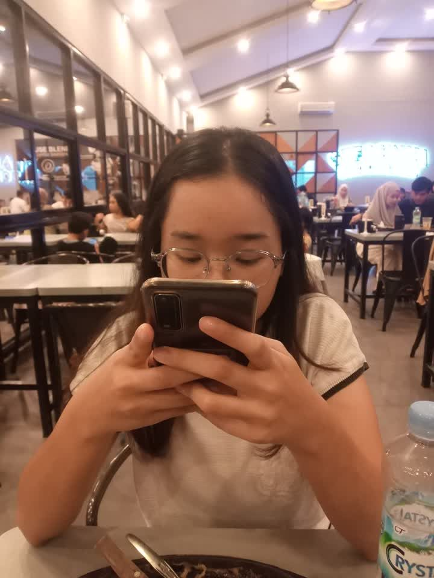
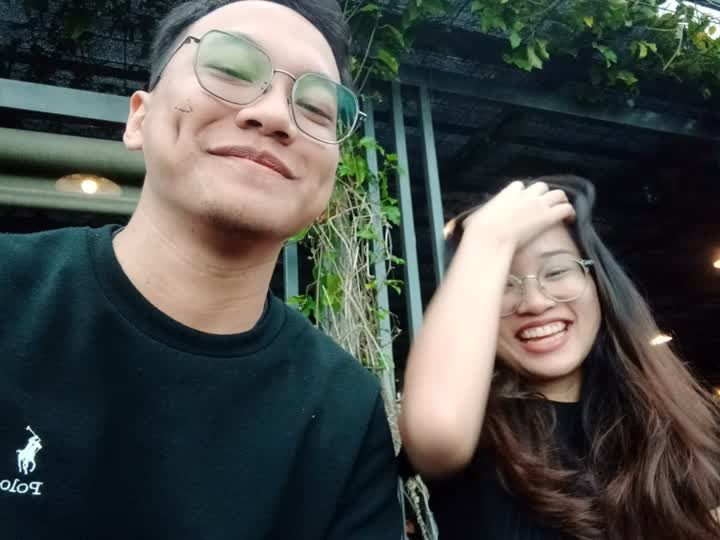
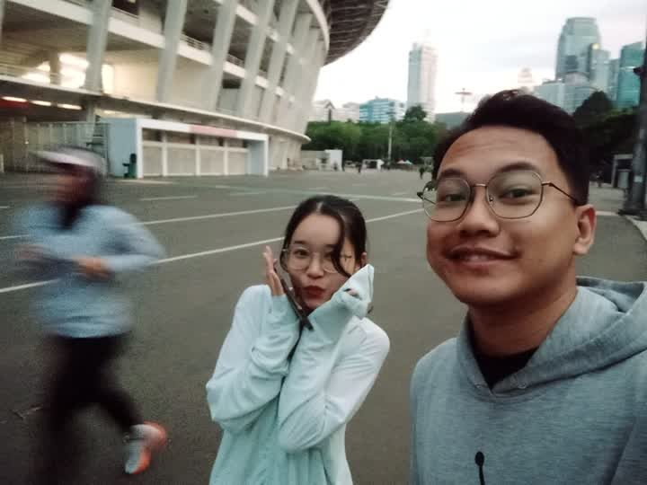
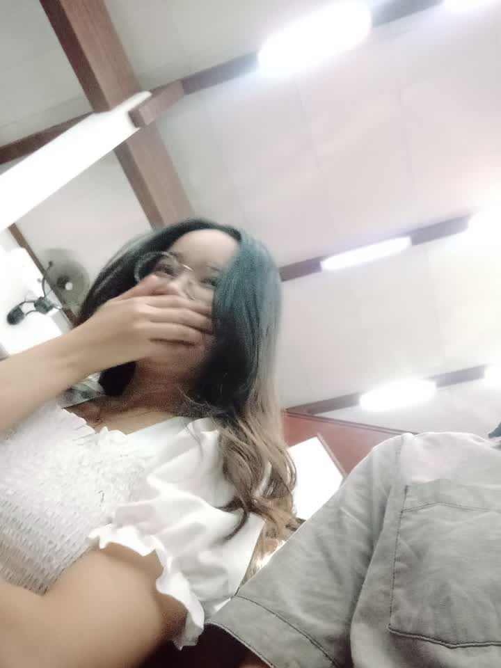
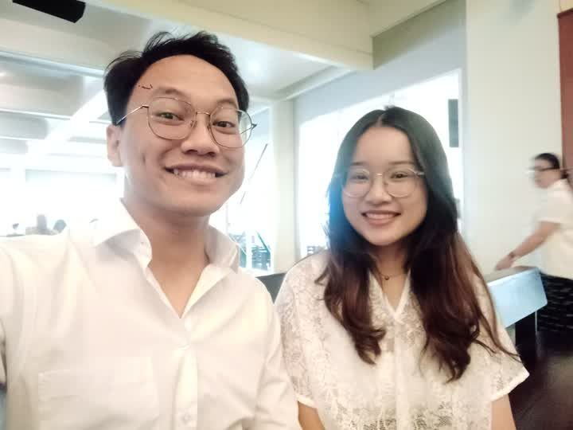
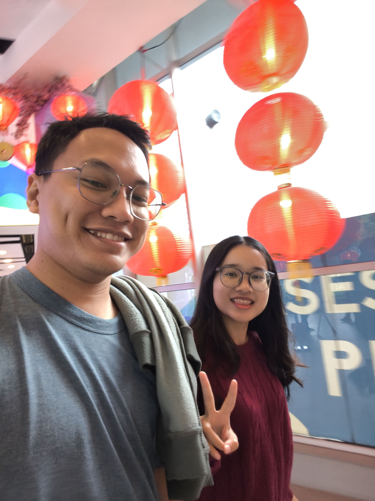

Buka lagi nanti sore ya 🥹
Ada sesuatu yang nunggu kamu.
1 April 2026 · 17.36 WIB
Memuat cinta...
365 hari, 8.760 jam, 525.600 menit —
setiap detiknya berharga karena kamu.
Momen-momen kecil yang membentuk cerita besar kita...






Buktikan 😏
flip flip yok wkwk!
Setiap foto menyimpan ribuan kata yang tak terucap...
Klik amplop untuk membuka...
Pertama-tama, aku bersyukur dan berterima kasih karena Tuhan bolehkan aku untuk mengenal dan dekat sama kamu.
Dari awalnya kita saling canggung... maju mundur soal perbedaan suku dan agama. Aku juga sempet bingung gimana cara deketin kamu — topik sering habis, nggak tau mau bahas apa, karena kita emang bukan teman deket dari awal. Susah banget nyari bahan obrolan, pokoknya struggle deh wkwk.
Tapi di suatu titik, aku mulai merasa nyaman — dan kamu pun juga. Sebelum aku nyatain perasaan, kita sempet ngobrol panjang dulu soal perbedaan kita. Saling terbuka soal budaya, kebiasaan, agama, dan banyak hal lain yang memang beda banget di antara kita. Dan soal restu orang tua juga — aku Jawa, kamu Batak, beda agama lagi. Nggak simpel, tapi kamu mau untuk hadapin bareng 🙏
Satu tahun ini... jujur aku orang yang mungkin nggak gampang diterima orang lain. Tapi kamu mau nerima aku — segala kekurangan, segala kesalahan yang nggak sedikit itu. Kamu yang paling ngerti aku sejauh ini. Dan kamu yang paling sabar.
Alasan kenapa aku sayang banget sama kamu dan mau terus bertahan adalah — kamu suka belajar, open-minded, dan selalu open to discuss. Kamu nggak nutup diri. Bareng kamu, aku yakin kita bisa saling berkembang dan saling dukung dalam hal apapun. Itu yang aku cari.
Maafin Albert yang sering bikin Ruth ribet ya... apalagi waktu Albert sakit — Ruth yang paling gercep, paling peduli, dan Albert malah makin manja wkwk. Makasih banyak buat itu. Susah senang, kamu selalu ada.
Semoga ke depannya kita selalu bareng, makin grow up bersama, dan hubungan kita makin naik level — sekarang baru level 1, semoga cepet lanjut ke level 2 wkwk. Dan semoga kita selalu saling memaafkan, saling memahami, saling terbuka dan jujur, serta terus berjalan di jalan Tuhan. 🙏
Happy Anniversary 1 tahun pacaran, sayangku. ❤️
May God bless us together, forever.
Minta dia scan ini untuk membuka halaman spesial